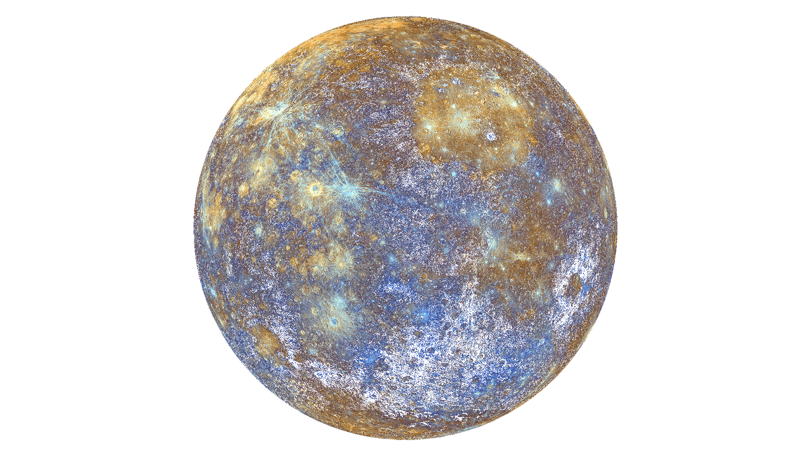
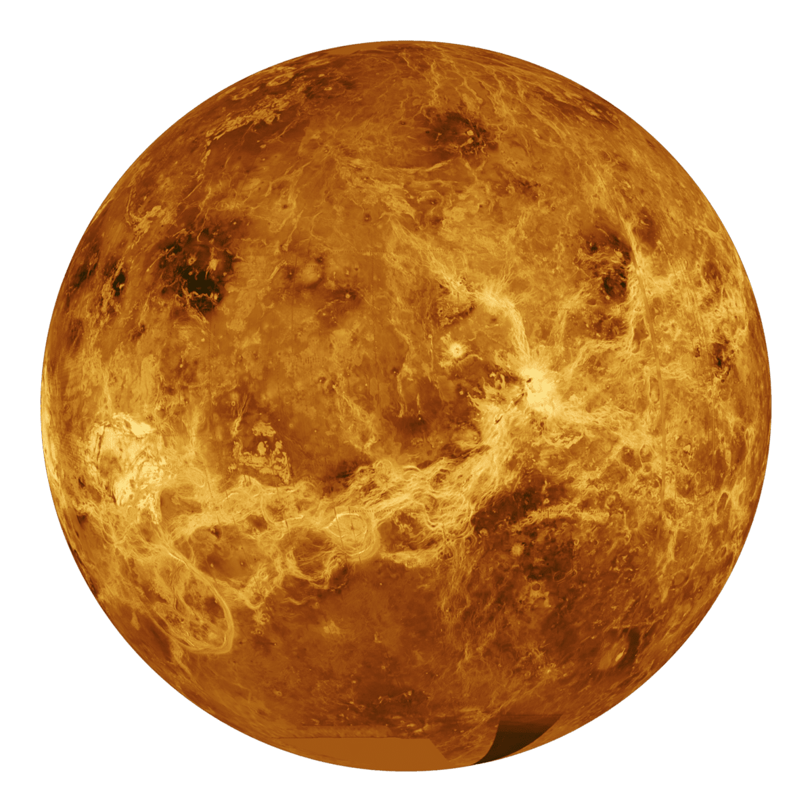
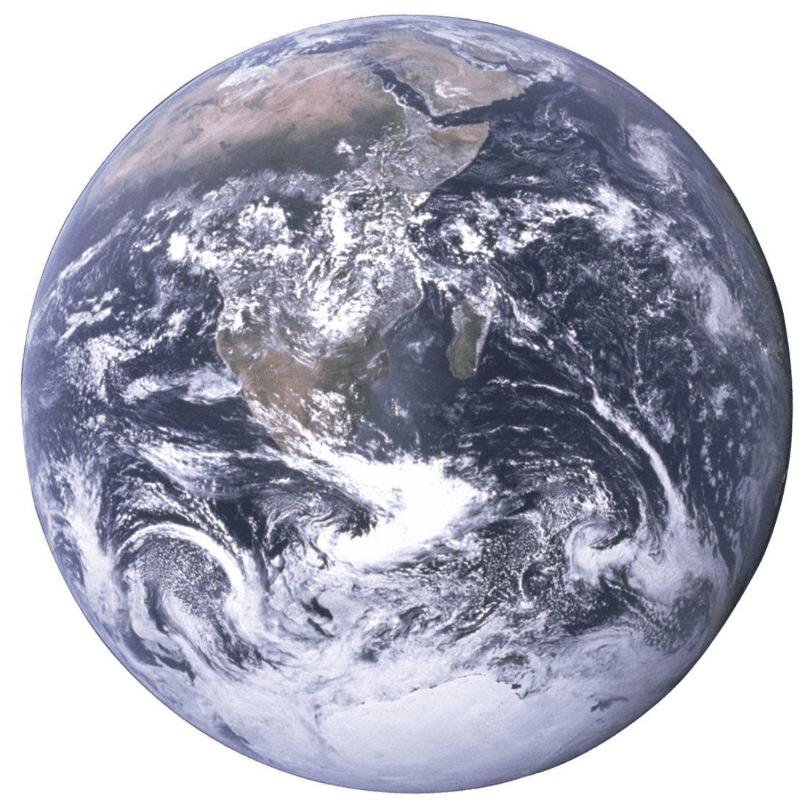
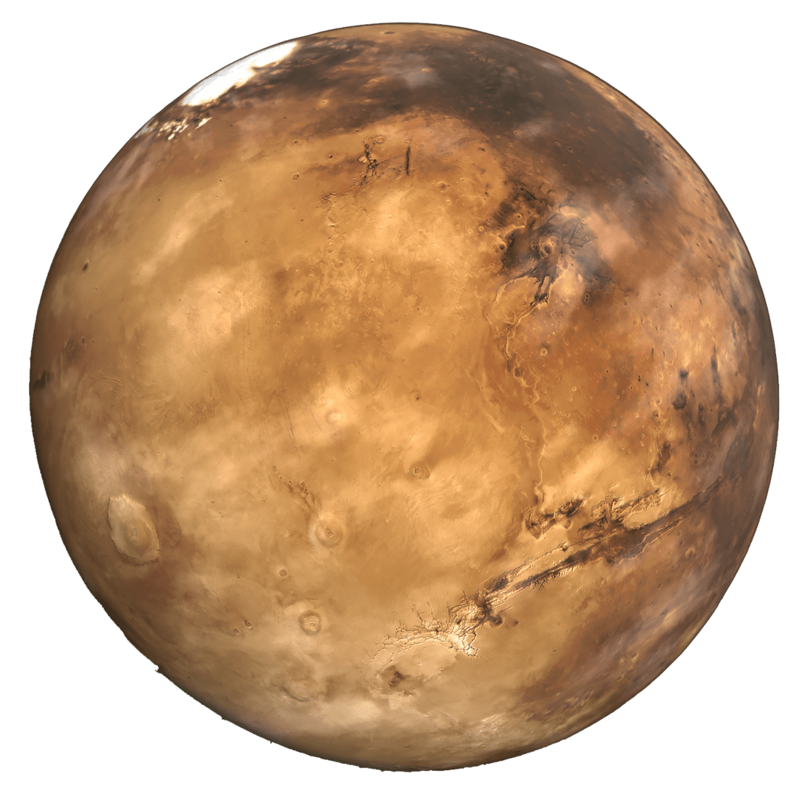
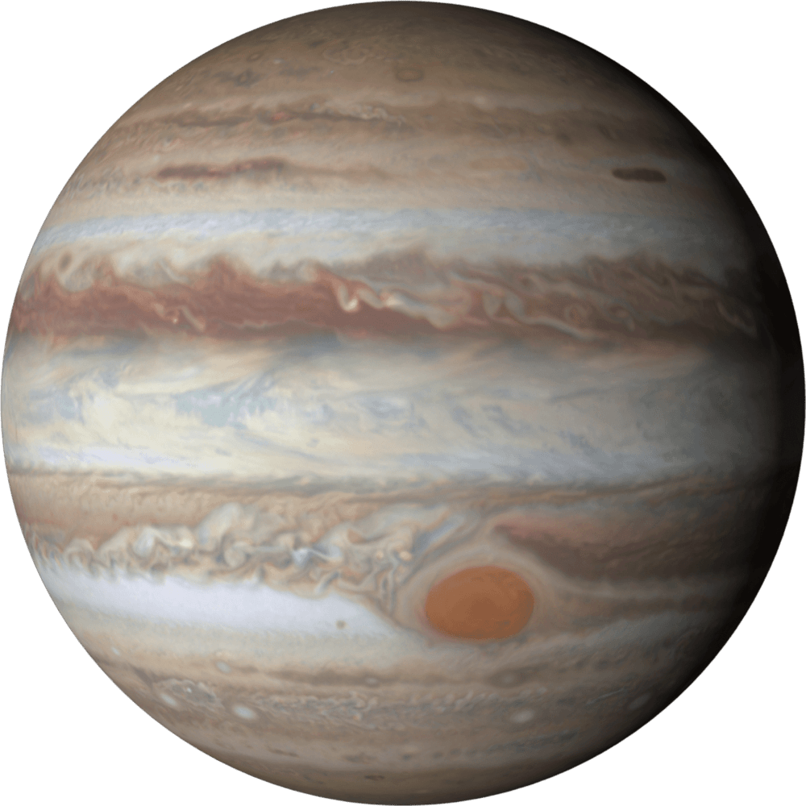
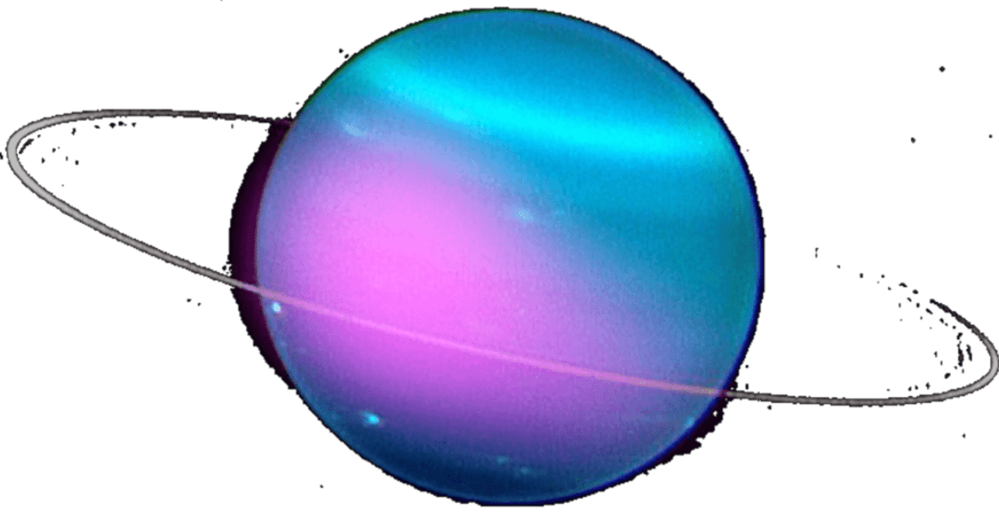
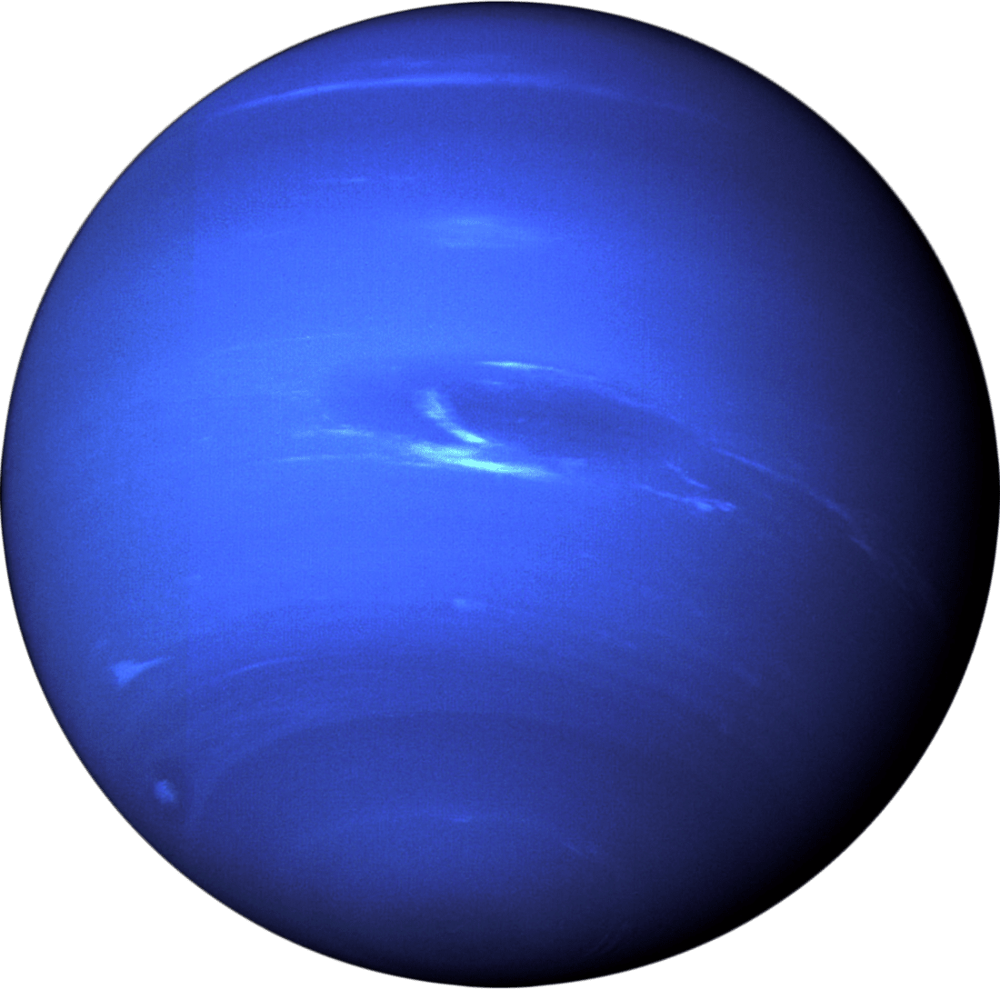

Return to Home Page
Exploring the Solar System
Mercury

Despite being the closest planet to the Sun, it is not the hottest planet. However, Mercury is the fastest
planet, orbiting around the Sun within 88 Earth days. For reference, it takes 365 Earth days for our Earth
to orbit the Sun. Mercury is also the smallest planet in our solar system, with a diameter of 4,879 km.
Moon count: 0
Orbital Period: 88 days
Temperature: -290°F (-180°C) to 800°F (430°C)
Planet Type:
Terrestrial(rocky)
Venus

The second planet from the Sun, which is also the hottest planet due to its thick atmosphere. Due to being
similar in size and structure, Venus is often called Earth's "twin planet. However, unlike its twin and
the rest of the planets, Venus spins backwards. This means that it has a day longer than a year. In the
night sky on Earth, it is the brightest planet to be seen.
Moon count: 0
Orbital Period: 225 days
Temperature: 820°F (438°C) to 900°F (482°C)
Planet Type:
Terrestrial(rocky)
Earth

The third planet from the Sun, Earth is where we call home. It is the only planet in the solar system
currently known to host life, due to its perfect distance from the Sun (Goldilock Zone), protection from
harmful solar radiation by its magnetic field, insulating atmosphere, and holds just the right chemical
ingredients for life.
Moon count: 1
Orbital Period: 365 days
Temperature: about 59°F(15°C)
Planet Type:
Terrestrial(rocky)
Mars

The fourth planet of the solar system, it is named after the Roman God of War. It is a fitting name,
considering that Mars is dry, rocky, and very cold. Despite that, NASA is sending robotics explorers, such
as the Perseverance Rover, to study the red planet to eventually get humans on its surface. Some theories
suggest that it once was a habitable planet, then its core cooled. This would lead to the destruction of
its magnetic field, exposing it to harmful radiations that would destroy the atmosphere and make the planet
a desert.
Moon count: 2
Orbital Period: 687 days
Temperature: -225°F(-153°C) to 70°F (20°C)
Planet Type:
Terrestrial(rocky)
Jupiter

The fifth planet of the solar system. It is known for its iconic Great Spot, which is the largest storm in
the Solar System. Jupiter is often called a "failed star" because despite having similar chemical
composition of a star (composing of Helium and Hydrogen), it is not big enough to commence energy
production to become a star. However, it is the largest planet in the Solar System, therefore also having
the strongest gravitational force among all the planets.
Moon count: 80-95
Orbital Period: 12 years
Temperature: -150°F(-100°C) to -260°F(-160°C)
Planet
Type: Gas Giants
Saturn

The sixth planet of the Solar System, holding its iconic ring. The ring is made up of billions of chunks of
rocks and ice. Despite only being the second largest planet in the Solar System, it is still 10 to 20 times
the mass of Earth. Similar to Jupiter, it is also composed of Helium and Hydrogen.
Moon count: 146
Orbital Period: 29.4 years
Temperature: -288°F(-178°C)
Planet Type: Gas Giants
Uranus

The seventh planet of the Solar System, also the coldest. It is also the smelliest planet in the solar
system, due to it containing a high amount of Hydrogen Sulfide, which is the same molecule that makes
rotten eggs. Uranus is well known for being tilted on its side, tilting at almost 98°. It also spins on
its side. Despite it being filled with gas, it is not considered a gas giant. Instead, it's an ice giant.
Moon count: 27
Orbital Period: 84 years
Temperature: -320°F(-195°C)
Planet Type: Ice Giants
Neptune

The last planet in the solar, which is also the furthest planet from the Sun. It is so far away that it
takes light 5 hours to travel from the Sun to Neptune. It is blue due to methane in the atmosphere, which
absorbs red wavelengths and reflects blue wavelengths. Although it may not seem like it, Neptune has at
least 5 rings.
Moon count: 14
Orbital Period: 165 years
Temperature: -353°F(-214°C)
Planet Type: Ice Giants